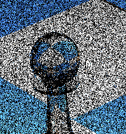
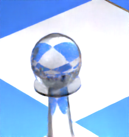
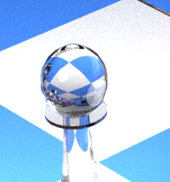

Denoising methods can be very effective in removing visual artifacts but the resulting image can be very different from the reference image.
 |
 |
 |
|---|---|---|
| output image with 1 spp | 1 spp with Intel® Open Image Denoise | reference image with 10,000 spp |
Furthermore temporal noise can appear in video if the denoising is done frame by frame.